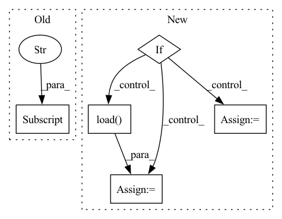

Pattern ID :38087
Before Change
// Loading loss scale eagerly
if not args.megatron:
opt_state_dict = checkpoint["optimizer"]
optimizer.loss_scaler = opt_state_dict["loss_scaler"]
optimizer.loss_scaler.model = model
optimizer.dynamic_loss_scale = opt_state_dict["dynamic_loss_scale"]
optimizer.overflow = opt_state_dict["overflow"]
optimizer.first_closure_call_this_step = opt_state_dict["first_closure_call_this_step"]After Change
// need to pass prefix without ranks to smp
local_ckpt_path = local_ckpt_path.split(".pt")[0] + ".pt"
if args.gather_if_shard > 0:
// Should expect v2 checkpoint here
checkpoint = smp.load(local_ckpt_path, partial=partial)
else:
// Loading separately for model and opt
checkpoint = torch.load(f"{local_ckpt_path}_{smp.pp_rank()}_{smp.tp_rank()}_0")
if smp.rdp_rank() != 0:
opt_checkpoint = torch.load(
f"{local_ckpt_path}_{smp.pp_rank()}_{smp.tp_rank()}_{smp.rdp_rank()}"
)
if load_model:
checkpointed_model = (
translate_hf_state_dict_to_smdistributed(checkpoint["model"], seq_length)In pattern: SUPERPATTERN
Frequency: 3
Non-data size: 5
Instances Fragment ID: 109158656
Project Name: aws/deep-learning-containers
Commit Name: 3e717d20db19b3c962141db2734b8ce2345c1ba0
Time: 2022-07-15
Author: 33940270+YangFei1990@users.noreply.github.com
File Name: test/sagemaker_tests/pytorch/training/resources/gpt2/train_gpt_simple.py
M Class Name: AnonimousClass
N Class Name: AnonimousClass
M Method Name: load_model_and_optimizer(11)
N Method Name: load_model_and_optimizer(11)
M Parent Class:
N Parent Class:
M File Name: test/sagemaker_tests/pytorch/training/resources/gpt2/train_gpt_simple.py
N File Name: test/sagemaker_tests/pytorch/training/resources/gpt2/train_gpt_simple.py
M Start Line: 307
M End Line: 348
N Start Line: 211
N End Line: 244
Before Change
// Build necessary components
train_loader = get_loader(config["data"], "train")
if config["data"]["overfit"] :
val_loader = get_loader(config["data"], "train")
else:
val_loader = get_loader(config["data"], "val")After Change
scheduler = torch.optim.lr_scheduler.StepLR(optim, config["training"]["lr_drop"])
// Load checkpoint if applicable
if args.resume is not None:
checkpoint = torch.load( Path(args.resume))
// Unpack and load content
model.load_state_dict(checkpoint["model_state_dict"])
optim.load_state_dict(checkpoint["optimizer_state_dict"])
scheduler.load_state_dict(checkpoint["scheduler_state_dict"])
epoch = checkpoint["epoch"]
metric_start_val = checkpoint["metric_max_val"]
else:
epoch = 0
metric_start_val = 0
// Init logging
path_to_run = Path(os.getcwd()) / "runs" / config["training"]["experiment_name"] Fragment ID: 109158658
Project Name: bwittmann/transoar
Commit Name: 943b60f71cbfae5fcb65729b42c3b9464b433db2
Time: 2021-11-29
Author: bastian.wittmann@tum.de
File Name: scripts/train.py
M Class Name: AnonimousClass
N Class Name: AnonimousClass
M Method Name: train(2)
N Method Name: train(1)
M Parent Class:
N Parent Class:
M File Name: scripts/train.py
N File Name: scripts/train.py
M Start Line: 17
M End Line: 51
N Start Line: 17
N End Line: 67
Before Change
for batch_idx, interaction in enumerate(eval_data):
// todo:
USER_ID = self.config["USER_ID_FIELD"]
ITEM_ID = self.config["ITEM_ID_FIELD"]
users, items = interaction[USER_ID], interaction[ITEM_ID]
scores = self.model.predict(interaction.to(self.device))
batch_size = users.size()[0]
After Change
break
def evaluate(self, eval_data, load_best_model=True):
if load_best_model:
// todo: more flexible settings
checkpoint_file = self.checkpoint_dir + "/model_best.pth"
checkpoint = torch.load( checkpoint_file)
self.model.load_state_dict(checkpoint["state_dict"])
message_output = "Loading model structure and parameters from {}".format(checkpoint_file)
print(message_output)
self.model.eval()
Fragment ID: 109158679
Project Name: rucaibox/recbole
Commit Name: 9a769dda3fd556549ce944046d6388298782c141
Time: 2020-07-13
Author: 2015201909@ruc.edu.cn
File Name: trainer/trainer.py
M Class Name: Trainer
N Class Name: Trainer
M Method Name: evaluate(3)
N Method Name: evaluate(2)
M Parent Class: AbstractTrainer
N Parent Class: object
M File Name: trainer/trainer.py
N File Name: trainer/trainer.py
M Start Line: 102
M End Line: 110
N Start Line: 149
N End Line: 165